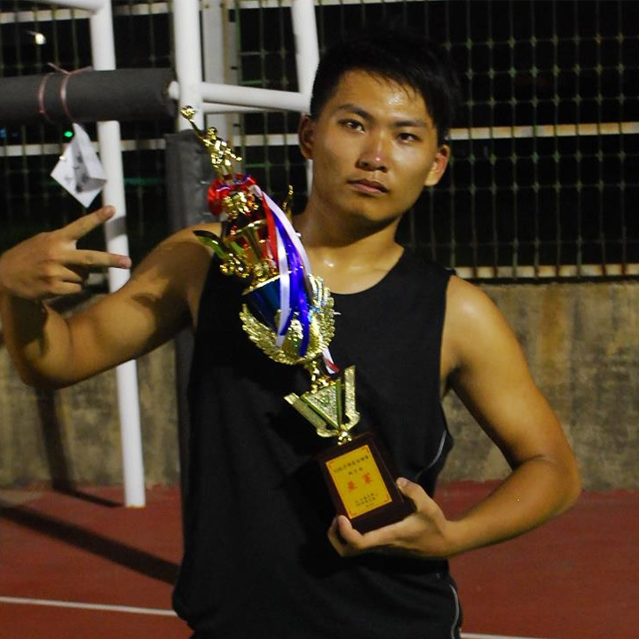
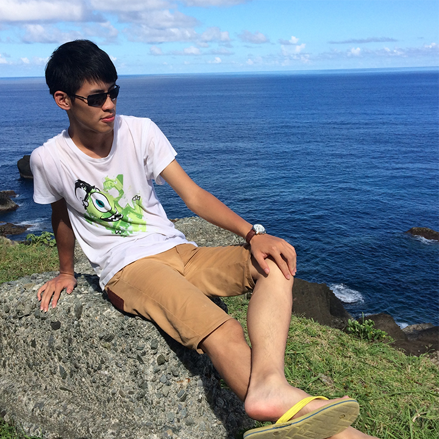
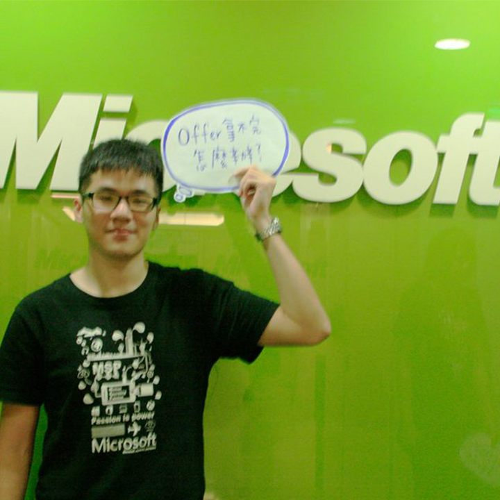
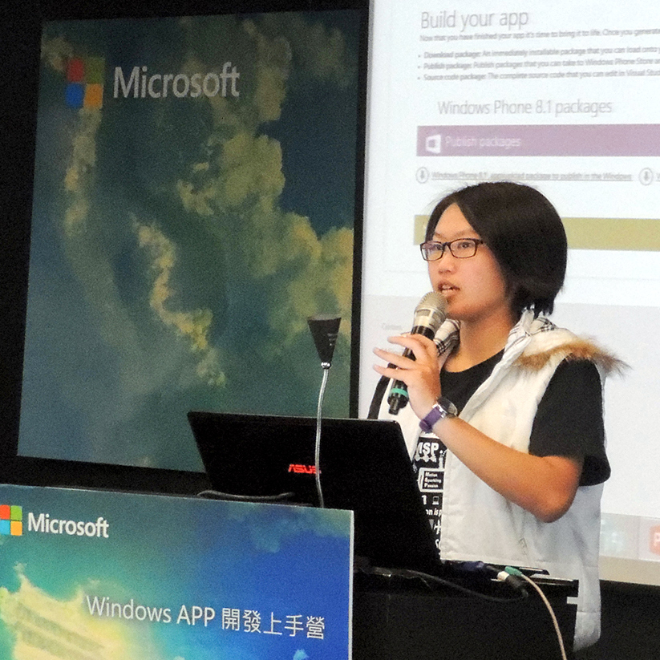
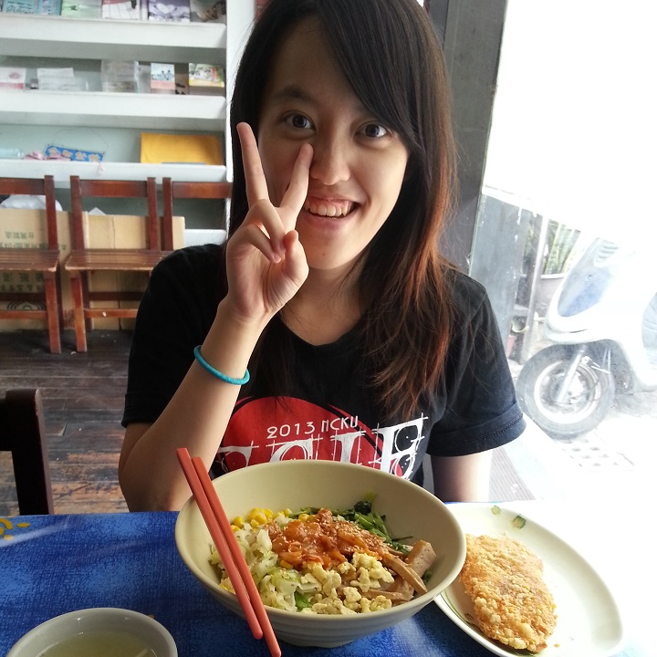
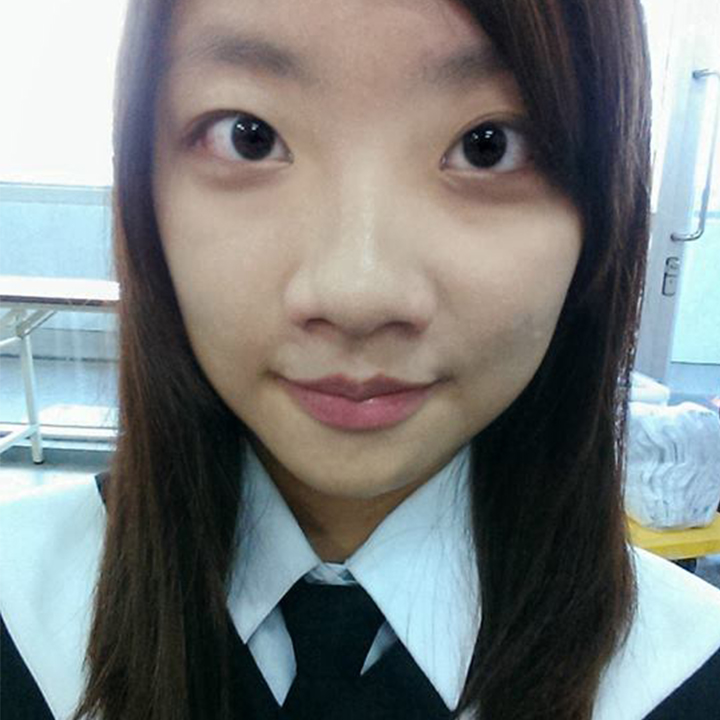
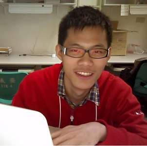
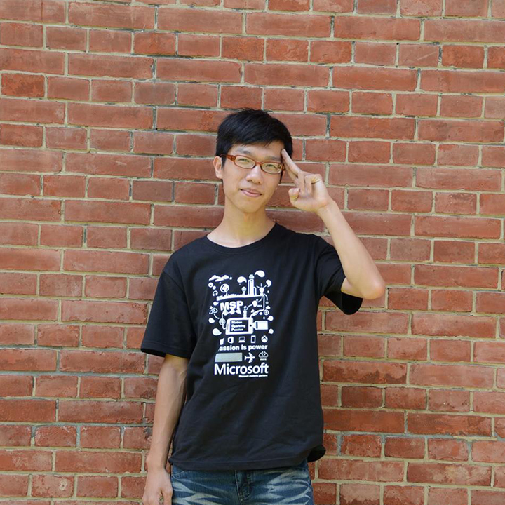

MICROSOFT STUDENT PARTNERS
微軟學生大使 歡迎您的加入


微軟學生大使
(簡稱MSP)是由美國微軟總部所創立，
並於全球超過100國家成立微軟學生大使，集合了來自全球
各地優秀及富創意的科技愛好者所組成的學生菁英組織。

並於全球超過100國家成立微軟學生大使，集合了來自全球
各地優秀及富創意的科技愛好者所組成的學生菁英組織。
STANDARD SKILLS
美宣組
企劃組
技術組

美宣組負責專案宣傳品及網站設計,提升微軟學生大使
形象外，還有機會承接公司官方宣傳品之設計。
形象外，還有機會承接公司官方宣傳品之設計。
Brainstorming ideas
Brand Packaging
Front-End Development
UI/UX Design
招生介紹影片
報名流程

報名辦法
請於MSP官方網站，仔細閱讀相關報名內容後，填寫一份制式履歷表，
與製作一份創意履歷，夾帶檔案於同一信件中並寄送到 msp.tw@outlook.com，工作人員將於三天內回信告知已收到報名資料，若未收到此確認信件，歡迎來信詢問。
報名資格
舉凡具有大專院校在校生資格者（即實習期間為在學學生），不限國籍，皆可報名。
報名時間
2015-03-01 中午12:00 至 2015-04-24 中午12:00 為投遞報名表時間，以信件寄達顯示時間為主，逾時不候。
* 補交履歷表：在網路上都有公開資訊，因此「除非事先來信告知有特殊情況，由工作人員判定可視為正當理由延後補交，否則一律不接受補交履歷或更新履歷」。
* 補交履歷表：在網路上都有公開資訊，因此「除非事先來信告知有特殊情況，由工作人員判定可視為正當理由延後補交，否則一律不接受補交履歷或更新履歷」。
報名結果
於2015-04-26在Microsoft Student partner in Taiwan 粉絲專頁上公佈錄取面試資格之名單，並且於4/27(一) 寄送相關面試資訊給錄取面試者，請密切注意信箱中之信件。
報名相關格式
請於同一封信中夾帶所需文件(制式履歷、創意履歷)，取好以下檔案名稱寄送至 msp.tw@outlook.com。制式履歷請點選
A. 信件名稱：第十屆MSP報名_組別（企劃組/美宣組/技術組）_姓名
B. 制式履歷名稱：制式履歷_組別（企劃組/美宣組/技術組）_姓名
C. 創意履歷名稱：創意履歷_組別（企劃組/美宣組/技術組）_姓名
 下載制式履歷
下載制式履歷
B. 制式履歷名稱：制式履歷_組別（企劃組/美宣組/技術組）_姓名
C. 創意履歷名稱：創意履歷_組別（企劃組/美宣組/技術組）_姓名
報名須知
A. 制式履歷為報名必要文件，請下載一定格式加以填寫；創意履歷也為必要文件，無格式，可使用檔案、圖檔、影片檔…等等，請自由發揮。
B. 當我們收到您的報名信件時，表示您已經同意於報名表上所填寫之個人資料，為報名微軟學生大使使用。
C. 於報名表上所填寫之內容完全正確，有虛構而被發現者，將取消報名資格。
D. 本微軟學生大使之實習徵選過程完全公正，若有關說等情事，被發現者，將取消報名資格。
E. 當我們收到您的報名信件時，表示您已經同意本微軟學生大使徵選之報名須知 規則。
B. 當我們收到您的報名信件時，表示您已經同意於報名表上所填寫之個人資料，為報名微軟學生大使使用。
C. 於報名表上所填寫之內容完全正確，有虛構而被發現者，將取消報名資格。
D. 本微軟學生大使之實習徵選過程完全公正，若有關說等情事，被發現者，將取消報名資格。
E. 當我們收到您的報名信件時，表示您已經同意本微軟學生大使徵選之報名須知 規則。
報名校園講座
微軟學生大使校園招生講座將於三月中開跑囉!!!
想知道全世界的微軟學生大使都在做些什麼嗎?
想得到進入微軟實習的機會嗎?
想為大學生活增添不同色彩嗎?
想替自己的履歷大大加分嗎?
微軟學生大使校園招生講座將帶你們一探究竟
活動中不僅有微軟學生大使計畫的介紹及學長姊不藏私的經驗分享
更有微軟提供的好康報你知喔!!
想知道全世界的微軟學生大使都在做些什麼嗎?
想得到進入微軟實習的機會嗎?
想為大學生活增添不同色彩嗎?
想替自己的履歷大大加分嗎?
微軟學生大使校園招生講座將帶你們一探究竟
活動中不僅有微軟學生大使計畫的介紹及學長姊不藏私的經驗分享
更有微軟提供的好康報你知喔!!
| 學校 | 日期 | 進場時間 | 開始時間 | 地點 | 我要報名 |
|---|---|---|---|---|---|
| 交大 | 3/12 | 1830 | 1900~2030 | SC151基礎科學大樓 | 快來按我 |
| 淡江 | 3/13 | 1830 | 1900~2030 | 問號 | |
| 育達 | 問號 | 1830 | 1900~2030 | 問號 | |
| 育達 | 問號 | 1830 | 1900~2030 | 問號 | |
| 崑山科大 | 問號 | 1830 | 1900~2030 | 問號 | |
| 清大 | 3/17 | 1830 | 1900~2030 | 問號 | |
| 輔大 | 3/18 | 1830 | 1900~2030 | 谷欣聽 | |
| 成大 | 3/18 | 1830 | 1900~2030 | 問號 | |
| 海大 | 3/19 | 1130 | 1200~1330 | 問號 | |
| 台大 | 問號 | 1830 | 1900~2030 | 問號 | |
| 東華 | 問號 | 1830 | 1900~2030 | 問號 | |
| 世新 | 問號 | 1830 | 1900~2030 | A201-300人教室 | |
| 政大 | 問號 | 1830 | 1900~2030 | 問號 | |
| 台藝大 | 3/25 | 1130 | 1200~1330 | 問號 | |
| 微軟總部 | 4/12 | 1230 | 1300~1430 | 問號 |
O U R T E A M
Microsoft Student Partners 是一個團隊，我們不只是一群一起工作的夥伴，
更是一起互助成長的戰友。我們沒有固定的工作時間，你不需要擔心地區性的問題。
因為有這些來自全國各地的夥伴加入，MSP才能像今天一樣強大。
實習工作分成三個組別：技術組、企劃組、美宣組。為期一年的實習期間，
可依照個人興趣參與其他組別工作也可以享受專屬於MSP的微軟資源。想讓大學期間有與眾不同的經驗嗎？
還是想與來自四面八方的高手互相切磋？ Microsoft Student Partners，是你的第一選擇。
更是一起互助成長的戰友。我們沒有固定的工作時間，你不需要擔心地區性的問題。
因為有這些來自全國各地的夥伴加入，MSP才能像今天一樣強大。
實習工作分成三個組別：技術組、企劃組、美宣組。為期一年的實習期間，
可依照個人興趣參與其他組別工作也可以享受專屬於MSP的微軟資源。想讓大學期間有與眾不同的經驗嗎？
還是想與來自四面八方的高手互相切磋？ Microsoft Student Partners，是你的第一選擇。


-
國立臺灣藝術大學 多媒體動畫藝術學系影片剪輯後製 / 數位互動藝術謝謝微軟提供這麼好的實習機會，也幸運的進來認識其他個領域的夥伴，每次的活動以及目標都讓我看到夥伴們相互合作以及展現專業的精神，這個經歷很特別也有不一樣的收穫，期待第十屆的ＭＳＰ們你們的參與 ：）
-

陳昱容
中國科大視傳中國科技大學 視覺傳達設計系平面or立體設計/ 企劃MSP是ㄧ個非常好的大家庭，夥伴們與主管都很nice，來這裡真的可以學習到非常多的事物呢!!感覺視野都不同了~哈~:)) -
洪夢憶
世新法律世新大學 法律學系修圖/平面設計相信自己，努力嘗試，你會發現，自己不一樣了。 -
黃鈺淳
世新圖傳世新大學 圖書傳播學系Ps,Ai,Id,Pr,AutoCAD,Lr,Dw,Fl這個實習機會將帶給你不同的視野，是一個從規劃到實踐的實務體驗，能夠用更多不同的角度去思考，並以許多面向去體驗去理解去溝通，將會是充實自我的最佳選擇。 -

莊珺涵
中央數學國立中央大學 數學系修圖 平面設計歡迎加入msp，相信會帶給你們全新的體驗和感受。來這兒可以認識很多來自四面幫方的高手，大家互相學習成長，互相切磋、磨練。微軟絕對會是你在大學四年期間令人難忘的回憶，加油！
-
梁鈺鋐
北科大資工國立台北科技大學 資訊工程學系企劃雖然身為理工相關科系的學生，對於公關企劃相關等卻有極高的興趣，毅然決然地決定報名了企劃組，永遠別害怕做怕事情；只怕不願意去做!相信自己內心最深處的渴望後，那就去追吧! -

朱韋慈
台大國發所國立臺灣大學 國家發展研究所企劃書撰寫當初想進來微軟實習，一方面希望讓自己在學生時代可以學到更多在學校所學不到的東西；一方面希望可以更瞭解自己還可以做什麼！
所以，如果你也抱持著這種心態，那麼參加MSP就會是你最好的選擇！以企劃組而言，你需要知道活動要怎麼規劃，以及要怎麼宣傳活動，甚至需要主持活動! 而這些活動都是玩真的，所以它不只是個企劃，更可以讓自己提前感受職場生活！ ！ -
詹禾芝
成大資管國立成功大學 工業與資訊管理學系企劃成為微軟學生大使前與後，我得到的改變非常多，最大的改變莫過於勇氣。如何站在台上獨當一面、團隊討論當中表達己見。企劃組所執行的工作內容，有許多是在學校社團活動當中體驗不到的。跟主管present後，才發現公司和學校社團所考慮的重點是截然不同。微軟學生大使是一個非常好的實習，讓你與各方人才切磋琢磨！MSP歡迎你的加入！ -
吳允婷
中央財金國立中央大學 財務金融學系企劃發想/發表主持「不要告訴我你會好好學習，告訴我你能為微軟貢獻什麼。」主管在面試最後對我說的這句話，讓我印象深刻。
和所有人一樣，拽著對微軟的崇拜和幾分興奮感前來，成為MSP的一份子。向主管、夥伴學習、親身走過這一趟，收獲，或許回頭看看當初面試啞口無言的那女孩身上就能明白。
微軟學生大使，讓你不再只是埋在自己的狹小世界自滿，看看別人有多厲害、看看自己究竟有多少能耐。 -

吳承翰
東華企管國立東華大學 企業管理學系企劃發想/發表主持如果你是個厲害的人正在尋找一個讓自己變更強的地方，微軟學生大使絕對是你的首選!!
在這裡我遇到了全台各校菁英，也接受了一些困難的挑戰。
這一年的過程中，與夥伴一起激盪創意，一起被主管罵，一起交出完美的企劃，在學生的生涯中寫下一段刻骨銘心的故事。
我是第九屆微軟學生大使
我在這裡成就更精采的自己
你準備好要接受挑戰了嗎? -
林玠宇
交大電機國立交通大學 電機工程學系出一張嘴而已我敢說，在學校的學習一切都太膚淺了，就算你覺得你在學校是個神，到了社會上你還差地遠。
來自交通大學電機系，卻選了一組完全和科技無關的企劃組。打從一開始就沒有沾上任何技術的領域，是因為如果到了實習仍在做大學或以後工作都在學的事情就沒這麼好玩了，在怎麼說我也是個玩咖，誤打誤撞就進到了MSP企劃組。
實習到底能學到甚麼? 應該是這樣講，甚麼都學得到！投入了多少就能得到多少，天經地義絕對不變的事實，不管到哪都一樣，心態決定一切。我很高興到了微軟我學到了真正職場上要具備的心態和實力，也認識了一群同甘共苦、來自世界各地的好麻吉們，一年下來希望你們認識的林玠宇，在你們意象裡是頭痛的存在但甜蜜的回憶xD。
我是九屆MSP公關企劃組林玠宇，我愛MSP，太神拉~!! -

張文騰
淡江國企淡江大學 國際企業學系企劃、英文在MSP的實習，我學到了許多有關企劃的精髓。除了有夥伴彼此的交流，加上主管的經驗分享，著實讓我增加企劃活動的實力。此外，最大的收穫即是認識許多來自不同學校的夥伴。因為他們，讓我增廣見聞許多，也認識許多神人朋友! 所以，想增加你的學經歷嗎? 想認識更多來自台灣頂尖大學的MSP夥伴嗎? 那就趕緊加入台灣微軟學生大使的行列吧! -
陳思穎
台大財金國立台灣大學 財務金融學系企劃在這個地方第一次踏出了舒適的校園，第一次嘗試進入社會工作；也是在這個地方經歷了第一次的跌倒，又重新振作。回顧過去半年，面對了許多不曾遇過的困難，也嘗試了一些有別於學生活動的企劃，誠心推薦我們這些小毛頭畢業前一定要面對一次社會。幸運的，我成為了9th MSP，採收的果實或許不是最甜美的，卻刻骨銘心。 -

王璐瑤
世新廣電世新大學 廣播電視電影學系企劃／影像創作何其有幸遇見優秀的你們。 -

楊楷薇
淡江英文淡江大學 英文學系英文我是MSP
我們主動學習
我們互相carry
我們不怕被糾正
我們追求做到最好
如果你也是 歡迎加入我們！ -
林至皓
台大社工國立臺灣大學 社會工作學系活動設計在MSP裡你會
認識到各式各樣的人才~
與不同校系的人相處~
學習各種在學校學不到的東西~
彼此教學相長 發揮所長
把不可能變成可能
想給自己一個機會跨出自己的小圈圈嗎?
來這邊就對了! -
宋雅雯
北科大土木國立台北科技大學 土木學系企劃發想MSP充滿全台灣菁英聚集地，可以從夥伴上互相學習，想要在求學時踏出自己的舒適圈，遇見不同凡響的自己嘛！那就來加入第十屆的「微軟學生大使」
-
何浩
海洋通訊國立台灣海洋大學 通訊與導航工程學系C++/Android/WindowsPhone/GNSS Receiver趕快加入
M S P !
M S P !
M S P !
M S P !
M S P !
M S P !
M S P ! -
蔡捷恩
台大資工國立台灣大學 資訊工程學系C++這是一個好玩又有收穫的實習機會,大家千萬要把握！ -

張軒榮
崑山資工崑山科技大學 資訊工程學系C# / .net加入MSP 不先去思考需要具備什麼能力，只先問自己有沒有追夢的勇氣
如果青春是一場協奏曲，那MSP將會是你最難以忘懷的樂章
不需要鮮美的肝，有熱情的心就好
Passion -

柯皓翔
北科大資工國立台北科技大學 資訊工程學系C / 文書排版加入MSP 這裡是個磨練自己除了做人做事
更能讓技術得到提升的地方
歡迎大家 :"> -
吳奕霖
北科大資工國立台北科技大學 資訊工程學系C#努力，是為了有更好的未來 -

蔡詠暲
育達資管所育達科技大學 資訊管理所C# JAVA 遊戲設計/開發這一年實習中，你除了可以學到一些微軟的新技術以及資訊
還可以認識到來自不同領域的高手，希望實習結束後你們會覺得很有收穫 -

李政哲
成大資工國立成功大學 資訊工程學系C/C++/JAVA在這一年中，除了學習到技術上的知識外，也認識了一群好夥伴，彼此幫忙，彼此合作!以為工程師都是宅男嗎?在大學時期喜歡參加社團跑系上活動嗎?想要體驗外商公司的工作模式嗎?喜歡跟不同領域的人合作開發出一個很厲害的產品?你一定不能錯過微軟學生大使!!!!! -

楊靜妃
成大資工國立成功大學 資訊工程學系C / C++ / JavaScript / PHP / SQL / Verilog很開心有機會成為MSP的一員
在這 學到的不僅是最新的微軟技術
我們重視成員間的溝通合作
不同組別的相互幫忙
更需要站上台展現所學
爆肝的日子 等你挑戰~
-

趙珮雯
成大資工國立成功大學 資訊工程學系C/C++在這裡除了可以學到技術之外，更重要的是認識一群厲害的人，可以一起學習一起合作，歡迎加入MSP！ -

謝子宸
成大資工國立成功大學 資訊工程學系C/C++、JAVA技術、Present、教學、跨組合作溝通……。成為MSP可以得到很多很多，不只是提升技術而已，更可以讓你以非學生的角度去看待很多事情，甚至結交來自不同背景的夥伴！ -
劉庭語
文化國企中國文化大學 國際企業管理學系C# matlab修圖 行銷 企劃To being strong,something u have to try once in a lifetime,like MSP^^ -

黃蓉
台大生工國立臺灣大學 生物環境系統工程學系C# C來到MSP不僅可以學到在學校學不到的東西，也可以認識許多優秀的夥伴，能夠成為MSP第9屆的一員真的十分幸運，第10屆的學弟妹加油！ -

陳俐璇
中央資管國立中央大學 資訊管理學系C / HTML+CSS+JavaScript擔任微軟學生大使的這一年當中，我認識到不同背景與專長的夥伴，也大大提升了技術能力。此外，透過主管的專業指導，也增進了我的present技巧。非常歡迎充滿活力的你們加入這個大家庭，這一年保證受益無窮！ -

盧聖約
清大資工國立清華大學 資訊工程學系C我愛MSP! -

簡以捷
中科大資工臺中科技大學 資訊工程學系C#「人外有人，天外有天」，一筆一劃，無法領教，向前觸及，必深體悟。
微軟這邊見識到各地的高手，也見識到大公司的體制，深感自己的渺小，難以踏入，實際戰場的環境，困境重重。
不過，碰到的各地高手，卻也成為我人生中，非常重要的朋友。一起學習，一起搭擋，一起向前，大家都是共同攜手，突破困境，解決難題，增加經驗，也更不忘一起玩樂！
不論思考、想法、態度，都有非常成熟的一面；不論遊戲、聊天、玩樂，都有非常幼稚的一面！很榮幸能站上這邊的舞台，跟大家一起快樂的學習：)
在這邊，非常歡迎下一屆 MSP 的參加，非常期待你們的蒞臨：)
-

施禎琮
崑山資工崑山科技大學 資訊工程學系java C#在MSP裡學到的不只是程式的知識，也學到了怎麼跟同事與主管溝通，讓自己領悟到工作的辛苦，在這裡我覺得非常的開心，也對這份工作感到驕傲。 -

陳永傑
台大資工國立台灣大學 資訊工程學系C/C++,Windows [Phone] app在這個大家庭裡會遇到各式各樣四面八方的人，全部都是彼此學習的對象；大家在這一年準備任務的途中會培養深厚的情感，絕對是學生生涯中難忘的經驗，也會交到一輩子的朋友。為了完成公司交付給MSP的任務你會成長，不知不覺中專業能力和身心靈都提升了。MSP每一屆的任務都不同，能學到和接觸到的人事物都不同；另外，MSP是微軟全球性的學生組織，會和國外的學生接觸；這不是只在國內公司當兩個月的實習生能比擬的。有潛力的人都來試試吧，這是一個讓自己眼界大增的機會。

常見問題
MSP相關問題
-
Q: 什麼是MSP？A: MSP，Microsoft Student Partners微軟學生大使，我們主辦微軟針對學生族群所籌備的各式活動（例：2014無境使者招募Windows APP 開發上手營）。
-
Q: MSP平常都在做些什麼？A: 根據不同的組別會有不同形式的工作，企劃組主要負責撰寫與執行企劃、美宣組設計符合微軟形象的活動相關宣傳品、技術組則是依活動性質協助活動參與及開發相關程式。
-
Q: 成為MSP可以得到什麼？A: 不僅在籌備及執行活動企劃的過程中，可以學習到如何讓企劃與現實環境結合，能有效運用身邊資源實際辦理大型的活動。最重要的是，MSP夥伴均來自台灣各大專院校，可以認識來自不同學校背景的人，攜手合作完成一個從無到有計畫，夥伴將成為MSP們最大的收穫。
-
Q: MSP有什麼實質的好處嗎？A: 你將能擁有國際認證的微軟學生大使證書；MSDN（Microsoft Developer Network），盡情使用微軟開發者資源；實習期間不定期課程培訓，學習最新微軟技術；每年舉辦學長姐回娘家，身為MSP的一員將能和優秀學長姐們相互交流、經驗分享，累積你的人脈資本。
-
Q: MSP有支薪嗎？A: MSP雖為不支薪的實習計畫，但在這一年實習的背後卻是滿滿的收穫！
-
Q: MSP平常會花很多時間嗎？A: 實習計畫都是需要付出時間和心力，請報名同學規劃好時間安排，希望所有參與MSP的學生都能全心全意的完成每一個工作。
-
Q: MSP有固定的上班時間或實習時間嗎？A: 不需要進公司當上班族、沒有固定上下班時間，最適合在學的你！在寒暑假期間會為應屆微軟學生大使安排培訓課程，這也是微軟學生大使的特色之一 – Free Learning。
-
Q: 如果是已畢業生，或者應屆畢業生，還可以來徵選嗎？A: 微軟學生大使須具備學生身分，無論是大一大二大三大四或是研究生，皆可參加。但如果你已經畢業並沒有辦法參與此實習計畫。
-
Q: 請問實習有年齡限制嗎？A: 只要具備「學生」身分，包括大專院校生與研究生，不論年齡都可以參與。
-
Q: 請問微軟為實習生們準備了甚麼樣的課程？A: 最新微軟技術學習（舉例來說：Visual Studio課程、Azure課程、跨平台領域整合課程）、整合行銷、Marketing、攝影剪片技巧、主持訓練、文稿撰寫等。
-
Q: 成為微軟學生大使，需要具備甚麼樣的能力呢？A: 任何實習、任何工作都一樣，不論厲害與否，付出多少就能夠收穫多少，一切取決於你的–進取心。
-
Q: 實習結束後有相關證明嗎？A: 微軟學生大使為國際性實習計畫，完整參與一整年實習，我們將頒發國際認證微軟學生大使證書。
-
Q: 提交履歷後，要等到何時才會有結果？A: 履歷提交後，將會於4/26於粉絲專頁公布錄取面試名單，並寄發面試相關通知給取得面試資格者；於5/2及5/16分別有兩階段的面試：主管面試及團體面試，請先預先留下時間，最終結果將會於5/20 公布於粉絲專頁，並寄發錄取通知。
報名相關問題
-
Q: 如果我已經寄出報名表了，但沒有收到確認信怎麼辦？A: 寄出報名表後將於3日內收到微軟學生大使寄出的回覆信件，若是沒有收到由 msp.tw@outlook.com 寄出的信件，請主動私訊粉絲專頁詢問以免喪失報名機會，將有工作人員幫你處理。
-
Q: 如果我已經是研究生仍然可以報名嗎？A: 可以！我們歡迎任何在學的大專院校及研究生參與。
-
Q: 如果我暑假預計出國一個月以上，我可以報名嗎？A: 建議欲報名的同學暑假期間大多時間都在台灣較佳，由於暑假期間微軟會安排相關課程，希望所有MSP均能全程參與；此外活動的規劃討論也是從暑假開始，若是有出國的打算需再三考慮一下時間上的規劃。
-
Q: 我的信箱收不到MSP所寄的信該怎麼辦？A: 建議以另一個信箱收信，學校的信箱大致上應該不會有傳輸上的問題；若仍有問題建議可以辦一個outlook專門收取MSP寄出的信件。
面試相關問題
-
Q: 面試需要影印三份履歷，那創意履歷需要印出來嗎？A: 視個人需要，建議每位面試者充分準備最能表現出自己特色的相關文件喔！
-
Q: 面試的日期跟時間可以更換嗎？A: 日期基本上不會更動，希望各位想成為MSP的同學務必將面試那幾天時間空下來。
-
Q: 面試的形式是？會問什麼問題呢？需要事先做什麼準備呢？A: 面試內容於面試當天現場公佈！請表現出自己最佳的狀態，充分了解MSP，順利通過面試成為MSP的一員！
-
Q: 面試需要著正式服裝嗎？A: 請穿著正式整齊舒適服裝即可。
關於創意履歷
-
Q: 創意履歷是必要的嗎？A: 是的，請務必要繳交創意履歷讓我們能發掘你的潛力！
-
Q: 創意履歷沒有限制格式，那如果繳交文字檔有限制頁數嗎？A: 沒有限制頁數喔，只要檔案在限制格式大小內即可。
-
Q: 創意履歷的繳交期限是？A: 跟制式履歷時間相同，一併繳交。
其他相關問題
-
Q: 我還有問題A: 如果還有任何問題，請來信至msp.tw@outlook.com或私訊Microsoft Student partner in Taiwan 粉絲專頁。